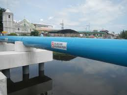

7. Meat eaters have much larger water-footprint as compared to vegans/ vegitarians.For example, to produce one pound of beef is 1,799 gallons of water. As a comparison, the water footprint of soybeans is 216 gallons.
This kind of water stress is more evident near the equator.
Solutions
Promoting sustainable water usage practices

Developing Infrastructure and facilities for the sanitization of water
Improving agricultural practices such as growing crops that need less water
Recycling and reusing waste water
More than 70% of the Earth is covered in water and theoretically everyone has access. However, its not the access thats an issue its access to clean water. Which can be solved through sponsoring water wells, and filteration devices